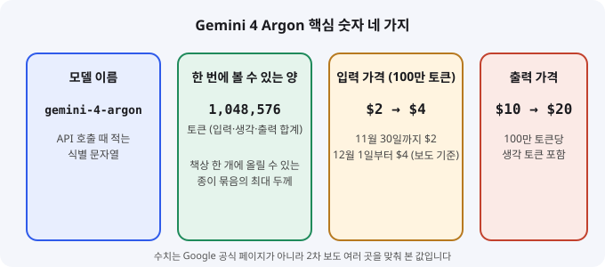
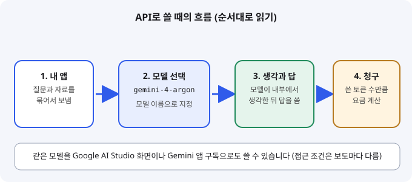

Gemini 4 Argon: 구글의 새 최상위 모델, 입문 개발자가 알아야 할 것
- 구글이 9월 30일 공개한 최상위 모델 Gemini 4 Argon이 10월 13일 개발자 API와 Gemini 앱으로 넓게 열렸다.
- 한 번에 약 104만 토큰을 다루며, 입력 100만 토큰당 2달러로 시작하는 토큰 단위 요금을 쓴다.
- 입문 개발자라면 모델 이름 gemini-4-argon과 요금 구조만 익혀도 첫 호출을 직접 해 볼 수 있다.
구글이 새 최상위 모델 Gemini 4 Argon을 내놓았습니다. 9월 말에는 일부 사이버보안 파트너에게만 먼저 열렸고, 10월 13일에는 개발자용 API와 Google AI Studio, 그리고 Gemini 앱으로 범위가 넓어졌습니다. 개발자가 코드에 적는 이름은 gemini-4-argon이라는 모델 ID입니다. 이 한 줄만 알면 누구나 API로 호출해 볼 수 있다는 점에서 입문자에게도 의미가 있습니다.
01한눈에 보기
대형 언어 모델(LLM)은 글을 읽고 쓰는 AI 엔진이라고 생각하면 쉽습니다. 자동차 엔진을 여러 차종에 얹듯, 개발자는 같은 모델을 챗봇, 코딩 도구, 문서 요약 프로그램에 붙여 씁니다. Argon은 구글 Gemini 4 세대에서 가장 높은 등급으로 소개된 모델입니다. 구글 대변인은 이 모델이 "복잡한 작업을 위해 만든 가장 성능 좋은 모델"이라고 말했다고 보도됐습니다. 보도에 따르면 이 모델은 코딩, 지식 작업, 과학 문제, 여러 단계로 이어지는 에이전트 작업을 겨냥합니다.

컨텍스트 창: 모델이 한 번에 붙잡고 볼 수 있는 범위입니다. 책상 크기와 같아서, 책상보다 두꺼운 자료 묶음은 한 번에 올릴 수 없습니다.
API: 내 프로그램이 모델에게 요청을 보내는 공식 입구입니다. 식당의 주문 창구와 비슷합니다.
02어떻게 동작하나요
흐름은 입력, 처리, 출력 순서입니다. 내 프로그램이 질문과 필요한 자료를 묶어 보내면, 모델은 답을 쓰기 전에 내부에서 생각하는 과정을 거칩니다. 그다음 최종 답과 함께 사용한 토큰 수를 돌려줍니다. 요금은 보낸 토큰(입력)과 받은 토큰(출력)에 각각 붙습니다. 출력 가격에는 생각 과정에 쓴 토큰도 포함된다고 가격표에 적혀 있다는 보도가 있습니다.
긴 답변을 받아야 할 때를 위한 긴 출력(long decode) 기능도 있다고 전해집니다. 기본 출력 한도는 65,536 토큰이고, 별도 설정을 쓰면 입력을 뺀 나머지 범위까지 출력을 늘릴 수 있다는 설명입니다. 이 기능은 공식 문서를 직접 열지 못해 보도 내용으로만 적습니다.

03왜 지금 화제인가요
발표와 공개가 두 번에 나뉘어 있어 시기별로 보면 흐름이 잘 보입니다.
- 구글이 Argon을 공개하고 일부 사이버보안 파트너에게 먼저 열었습니다. 일반 공개 시점은 정하지 않았다고 보도됐습니다.
- 개발자용 API와 Google AI Studio에서 쓸 수 있게 됐고, Gemini 앱에서도 구독자 대상 공개가 시작됐습니다. API 가격은 입력 2달러, 출력 10달러로 제시됐습니다.
- 독일 기술 매체 GoogleWatchBlog가 "며칠 전 출시"라고 전하며 모델 이름의 뜻을 짚었습니다.
이번 수집에서는 개발자 커뮤니티의 실제 사용 후기를 찾지 못했습니다. 그래서 화제의 중심은 공식 발표와 가격 변화라고 보는 편이 정확합니다. 커뮤니티 반응은 다음 기회에 따로 확인하겠습니다.
04관련 나라·기업
| 구분 | 이름 | 어떤 관련이 있나 |
|---|---|---|
| 기업 | Argon을 만든 회사로, API와 AI Studio, Gemini 앱을 통해 공개했습니다. | |
| 기업 | OpenAI | 보도에서 성능 비교 대상으로 든 Astra 모델을 만든 회사입니다. |
| 기업 | Anthropic | 보도에서 비교 대상으로 든 Opus 모델을 만든 회사입니다. |
| 나라 | 미국 | 세 회사 모두 미국에 본사를 둔 회사입니다. |
05기존 방식과 무엇이 다른가
| 비교 항목 | 기존 방식 | Argon 사용 방식 |
|---|---|---|
| 접근 경로 | 앱에서 채팅으로만 쓰는 경우가 많음 | API로 코드에 붙이거나, AI Studio와 앱에서 직접 사용 |
| 요금 | 구독료 정액 또는 사용량 기준 | 토큰 단위 과금, 12월 1일 이후 가격 인상 예정 (보도 기준) |
| 긴 자료 | 여러 번 나눠 붙여넣기 | 컨텍스트 창 약 104만 토큰 안에서 한 번에 전달 |
| 모델 선택 | 하나의 모델을 정해 두고 계속 씀 | 작업 난도에 따라 최상위 모델과 가벼운 모델을 나눠 씀 |
06직접 해 보기
공식 문서의 예제 코드는 이번 글에서 직접 확인하지 못했습니다. 그래서 아래는 단계 설명만 적습니다. 모델 이름과 가격은 여러 보도가 같은 값을 말하는 것을 기준으로 했습니다.
1. API 키 준비하기
Google AI Studio에 구글 계정으로 로그인해 API 키를 만듭니다. 키는 비밀번호처럼 다루고, 소스 코드에 직접 적지 말고 환경 변수로 넣습니다.
2. 공식 빠른 시작 예제 열기
구글 공식 Gemini API 문서의 빠른 시작(Quickstart) 페이지를 엽니다. 예제가 어떤 언어로 되어 있는지 확인하고, 예제 그대로 한 번 실행해 봅니다.
3. 모델 이름만 바꾸기
예제에 적힌 모델 이름을 gemini-4-argon으로 바꿔 같은 질문을 보냅니다. 같은 질문을 예전 모델에도 보내 답의 차이를 나란히 비교해 봅니다.
4. 토큰과 요금 계산하기
응답에 담긴 입력 토큰과 출력 토큰 수를 적어 둡니다. 입력 100만 토큰당 2달러, 출력 100만 토큰당 10달러 기준으로 한 번 계산해 봅니다. 12월 1일 이후에는 4달러와 20달러로 보도됩니다.
07주의할 점과 한계
- 성능 수치는 구글이 발표한 자체 평가입니다. 보도들은 일부 항목에서는 앞서고 일부 코딩 항목에서는 뒤처졌다고 전합니다. 독립 기관의 검증 자료는 찾지 못했습니다.
- 가격은 12월 1일부터 두 배로 오른다고 보도됩니다. 장기 비용을 잡을 때는 이 날짜를 기준으로 계산해야 합니다.
- 접근 조건이 보도마다 다릅니다. 한 곳은 구독 등급(AI Pro, Ultra)에 따른 제한을 말했고, 다른 곳은 API 가격 페이지에서 무료 등급과 Pro 등급이 제외된다고 적었습니다. 실제로 쓰기 전에 공식 요금 페이지를 확인하세요.
- 모델 카드에 환각(사실이 아닌 내용을 그럴듯하게 말하는 현상)과 간헐적인 지연, 시간 초과 가능성이 적혀 있다고 보도됐습니다. 중요한 판단에는 사람이 확인하는 단계를 두어야 합니다.
- 이번 글은 구글 공식 문서 페이지를 직접 열지 못했습니다. 모델 이름, 가격, 컨텍스트 수치는 여러 2차 보도가 같은 값을 말하는 것을 맞춰 본 결과입니다.
08정리
Gemini 4 Argon의 핵심은 "가장 강한 모델이 하나 더 나왔다"는 사실보다, 개발자가 같은 모델을 API 한 줄로 부를 수 있게 열렸다는 점입니다. 입문자에게 중요한 것은 세 가지입니다. 모델 이름(gemini-4-argon), 한 번에 다루는 토큰 양, 토큰 단위 요금입니다.
오늘 해 볼 일은 API 키를 만들고, 예제의 모델 이름을 바꿔 한 번 호출해 보는 것입니다. 응답이 돌아오면 토큰 수를 적어 두고 요금을 직접 계산해 보세요. 성능과 비용을 함께 보는 습관이 AI를 쓰는 첫걸음이 됩니다.
09참고한 글
- Google announces Gemini 4 flagship AI model after months of delays Khaleej Times · 2026.10.01 14:24 (수집 구간 밖)
- Google begins Gemini 4 Argon rollout with access limited to paying users RTTNews · 2026.10.13 18:05 ET (수집 구간 밖)
- Google expands Gemini 4 Argon access across API and subscriber products Let's Data Science · 2026.10.13 21:31 UTC (수집 구간 밖)
- Gemini 4 Argon now available: long decode, limits, pricing BrainDetox · 2026.10.14 (수집 구간 밖)
- Gemini 4 Argon: Googles KI-Modell bekommt erstmals einen echten Namen GoogleWatchBlog · 2026.10.24 18:30 KST (수집 구간 밖)